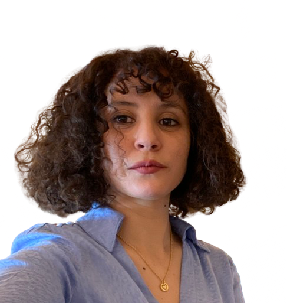

Je suis Nassima YAHIAOUI
Developpeuse web et web mobile avec 8ans d'éxpériences dans le domaine de la recherche scientifique.
Dotée de forte capacites d'analyses et une aptitude à résoudre les problèmatiques ainsi q'une adaptation rapide.
Téléchargez mon cv
